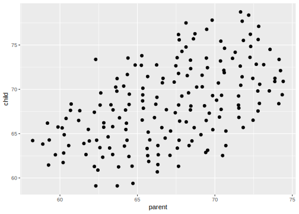
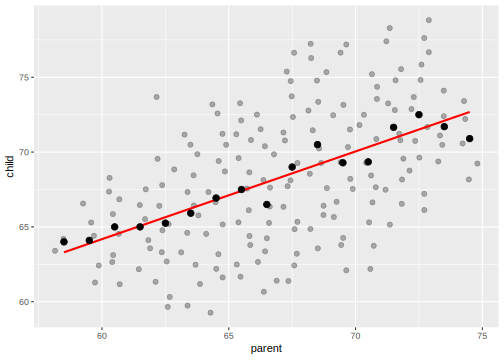
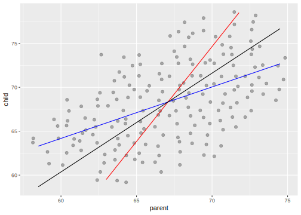

Chapter 3 Goodness of Fit
What measures do we have for how well a line fits the data?
3.1 Root Mean Squared Error and Standard Error
The first is the mean squared error, \[ MSE = \frac{1}{n} \sum_{i = 1}^n \hat\epsilon_i \] or root mean squared error, \[ RMSE = \sqrt{\frac{1}{n} \sum_{i = 1}^n \hat\epsilon_i} \]
The standard error, \(\hat\sigma\) is similar, but is an estimator of the standard deviation of the population errors, \(\epsilon_i \sim N(0, \sigma)\) \[ \hat\sigma = MSE = \sqrt{\frac{1}{n - k - 1} \sum_{i = 1}^n \hat\epsilon_i} \] where \(k + 1\) is the number of coefficients (including the intercept) in the regression. In the simple (bivariate) regression model \(k = 1\), since there is one variable in addition to the intercept.
The only difference between the \(RMSE\) and \(\sigma\hat\) is the denominator; \(\sigma\hat\) adjusts for the degrees of freedom. As the sample size gets large relative to the number of variables, \(n - k \to \infty\), the standard error of the regression approaches the MSE, since \(1 / (n - k - 1) \to 1 / n\).
3.2 R squared
The coefficient of determination, \(R^2\),
- If \(R^2 = 1\), then \(SSE = 0\), and all points of \(y_i\) fall on a straight line. However, if all values of \(y_i\) are equal (\(SSE = SST = 0\)), then the \(R^2\) is undefined.
- If \(R^2 = 0\), then there is no relationship. \(SSE = SST\), meaning that including \(x_i\) does not reduce the residuals any more than using the mean of \(\vec{y}\).
- In the bivariate regression case, \[ R^2 = \cor(x, y)^2 , \] hence its name (since \(r\) is the letter usually used to indicate correlation).
- In the more general case, \(R^2\) is the squared correlation between the outcome and the fitted values of the regression, \[ R^2 = \cor(\vec{y}, \hat{\vec{y}}). \]
The common interpretation of \(R^2\) is “the fraction of variation in \(y_i\) that is explained by the regression (\(x_i\)).” In this context, “explained” should not be interpreted a “caused.”
Consider the \[ Y = a X + \epsilon \] The variance of \(Y\) is \(a^2 \Var(X) + \Var(\epsilon)\) (supposing \(\cor(X, \epsilon) = 0\) ). The “variance explained” by the regression is simply \(a^2 \var(x)\), and \[ R^2 = \frac{a^2 \var(X)}{a^2 \var(X) + \var(\epsilon)} \] As the variation in \(X\) gets large, \(\var(X) \to \infty\), then the regression “explains” everything, \(R^2 \to 1\), and as the variance in \(X\) gets small, \(\var(X) \to 0\), then the regression explains nothing, \(R^2 \to 0\).
3.3 Maximum Likelihood
The OLS estimator of linear regression finds \(\beta_0\) and \(\beta_1\) by minimizing the squared error. One nice property of this estimator is that it agrees with the maximum likelihood estimator of the coefficients.2 Maximum likelihood estimation (MLE) is a general statistical estimator. It finds parameters by doing what its name says, maximizing a likelihood function. A likelihood function, \(f(\vec{y} | \vec{\theta})\), is the probability of observing the data, \(\vec{x}\), given parameter values, \(\vec{y}\). The MLE value of the parameters, \(\hat{\vec{\theta}}\), is the value of the parameters that maximizes the probability of observing the data. While no distributional assumptions were needed to calculate the OLS estimator (though some are needed for inference in small samples), the MLE requires specifying distributions for the data. In linear regression, we assume the following model, \[ \begin{aligned}[t] Y_i &= \beta_0 + \beta_1 X_i + \epsilon_i \end{aligned} \] where \(\epsilon_i \sim N(0, \sigma^2)\). That must assume the errors are distributed normally in order to calculate the estimates of \(\vec{\beta}\) is different than OLS. Then the MLE function is, \[ \begin{aligned}[t] \hat\beta_0^{(MLE)}, \hat\beta_1^{(MLE)}, \hat\sigma^{(MLE)} &= \argmax_{\beta_0, \beta_1, \sigma} \sum_{i = 1}^n \frac{1}{\sqrt{2 \sigma^2 \pi}} \exp \left( - \frac{1}{2 \sigma^2} (y_i - \beta_0 - \beta_1 x_i)^2 \right) \\ &= \argmax_{\beta_0, \beta_1, \sigma} \sum_{i = 1}^n \frac{1}{\sqrt{2 \sigma^2 \pi}} \exp \left( - \frac{1}{2 \sigma^2} \cdot \epsilon^2 \right) \end{aligned} \] For numerical reasons,3 in practice, the log-likelihood maximized instead of the likelihood, \[ \begin{aligned}[t] \hat\beta_0^{(MLE)}, \hat\beta_1^{(MLE)}, \hat\sigma^{(MLE)} &= \argmax_{\beta_0, \beta_1, \sigma} -\frac{n}{2} \log \sigma^2 - \sum_{i = 1}^n \left( - \frac{1}{2 \sigma^2} (y_i - \beta_0 - \beta_1 x_i)^2 \right) , \\ &= \argmax_{\beta_0, \beta_1, \sigma} -\frac{n}{2} \log \sigma^2 - \sum_{i = 1}^n \left( - \frac{1}{2 s^2} \cdot \epsilon^2 \right) . \end{aligned} \]
Even though the estimators are different, both MLE and OLS will produce the same linear regression estimates for \(\beta_0\) and \(\beta_1\), \[ \hat\beta_0^{(MLE)} = \hat\beta_0^{(OLS)} \text{ and } \hat\beta_1^{(MLE)} = \hat\beta_1^{(OLS)} . \]
Some intuition as to why the OLS and MLE estimates agree can be gained from noticing that the likelihood function of the normal distribution includes the negative sum of squared errors, so maximizing the likelihood, minimizes the squared errors.
That is all that will be said about MLE for now, since it is not necessary for most of the material on linear models. But MLE is perhaps the most commonly used to estimator and will reappear many times, notably with generalized linear models, e.g. logit, probit, binomial, Poisson models.
3.4 Regression Line
filter <- dplyr::filter
library("HistData")
heights <- dplyr::filter(PearsonLee, par == "Father", chl == "Son")
heights %>%
ggplot(aes(x = parent, y = child)) +
geom_jitter()
height_summary <-
heights %>%
group_by(parent) %>%
summarise(child = mean(child))
ggplot() +
geom_jitter(data = heights, aes(x = parent, y = child), alpha = 0.3) +
geom_smooth(data = heights, aes(x = parent, y = child), se = FALSE, method = "lm", colour = "red") +
geom_point(data = height_summary, aes(x = parent, y = child), colour = "black", size = 2)
“Corelation measures the extent to which a scatter diagram is packed around a line” - Freedman p. 21
\[ MSE = (1 - r^2) \Var(y) \]
Among all lines, the regression line has the smallest RMSE
- estimates aren’t parameters, and residuals aren’t random errors
- in a regression model, the data are observed values of random variables.
- observed values are called “realizations”
heights %>%
add_predictions(lm(parent ~ child, data = .), var = "pred_parent") %>%
add_predictions(lm(child ~ parent, data = .), var = "pred_child") %>%
mutate(sd_y = sd(child),
sd_x = sd(parent),
mean_y = mean(child),
mean_x = mean(parent),
cor_xy = cor(parent, child),
cor_line = mean_y + sign(cor_xy) * (sd_y / sd_x) * (parent - mean_x)) %>%
ggplot() +
geom_jitter(mapping = aes(x = parent, y = child), alpha = 0.3) +
geom_line(mapping = aes(x = parent, y = pred_child), colour = "blue") +
geom_line(mapping = aes(x = pred_parent, y = child), colour = "red") +
geom_line(mapping = aes(x = parent, y = cor_line))
The correlation line is: \[ y = \bar{y} + \text{sign}(r_{xy}) \left( \frac{s_y}{s_x} \right) (x - \bar{x}) \] The correlation is the same as the regression line if both \(y\) and \(x\) are standardized to have mean zero and standard deviation one.
However, the MLE estimator of the regression standard error is not the same as the OLS estimator, \(\hat\sigma_{MLE} \neq \hat\sigma_{OLS}\).↩
Probabilities can get quite small, so multiplying them together can result in numbers too small to represent as different than zero. Adding the logarithms of probabilities can represent much smaller floating point numbers.↩